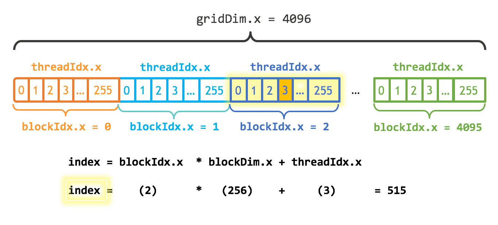

Introduction
A gentle introduction to parallelization and GPU programming in Julia
Julia has first-class support for GPU programming: you can use high-level abstractions or obtain fine-grained control, all without ever leaving your favorite programming language. The purpose of this tutorial is to help Julia users take their first step into GPU computing. In this tutorial, you'll compare CPU and GPU implementations of a simple calculation, and learn about a few of the factors that influence the performance you obtain.
This tutorial is inspired partly by a blog post by Mark Harris, An Even Easier Introduction to CUDA, which introduced CUDA using the C++ programming language. You do not need to read that tutorial, as this one starts from the beginning.
A simple example on the CPU
We'll consider the following demo, a simple calculation on the CPU.
N = 2^20x = fill(1.0f0, N) # a vector filled with 1.0 (Float32)y = fill(2.0f0, N) # a vector filled with 2.0y .+= x # increment each element of y with the corresponding element of x1048576-element Vector{Float32}:
3.0
3.0
3.0
3.0
3.0
3.0
3.0
3.0
3.0
3.0
⋮
3.0
3.0
3.0
3.0
3.0
3.0
3.0
3.0
3.0check that we got the right answer
using Test@test all(y .== 3.0f0)Test PassedFrom the Test Passed line we know everything is in order. We used Float32 numbers in preparation for the switch to GPU computations: GPUs are faster (sometimes, much faster) when working with Float32 than with Float64.
A distinguishing feature of this calculation is that every element of y is being updated using the same operation. This suggests that we might be able to parallelize this.
Parallelization on the CPU
First let's do the parallelization on the CPU. We'll create a "kernel function" (the computational core of the algorithm) in two implementations, first a sequential version:
function sequential_add!(y, x) for i in eachindex(y, x) @inbounds y[i] += x[i] end return nothingendfill!(y, 2)sequential_add!(y, x)@test all(y .== 3.0f0)Test PassedAnd now a parallel implementation:
function parallel_add!(y, x) Threads.@threads for i in eachindex(y, x) @inbounds y[i] += x[i] end return nothingendfill!(y, 2)parallel_add!(y, x)@test all(y .== 3.0f0)Test PassedNow if I've started Julia with JULIA_NUM_THREADS=4 on a machine with at least 4 cores, I get the following:
using BenchmarkTools@btime sequential_add!($y, $x) 487.303 μs (0 allocations: 0 bytes)versus
@btime parallel_add!($y, $x) 259.587 μs (13 allocations: 1.48 KiB)You can see there's a performance benefit to parallelization, though not by a factor of 4 due to the overhead for starting threads. With larger arrays, the overhead would be "diluted" by a larger amount of "real work"; these would demonstrate scaling that is closer to linear in the number of cores. Conversely, with small arrays, the parallel version might be slower than the serial version.
Your first GPU computation
Installation
For most of this tutorial you need to have a computer with a compatible GPU and have installed CUDA. You should also install the following packages using Julia's package manager:
pkg> add CUDAIf this is your first time, it's not a bad idea to test whether your GPU is working by testing the CUDA.jl package:
pkg> add CUDApkg> test CUDAParallelization on the GPU
We'll first demonstrate GPU computations at a high level using the CuArray type, without explicitly writing a kernel function:
using CUDAx_d = CUDA.fill(1.0f0, N) # a vector stored on the GPU filled with 1.0 (Float32)y_d = CUDA.fill(2.0f0, N) # a vector stored on the GPU filled with 2.01048576-element CuArray{Float32, 1, CUDACore.DeviceMemory}:
2.0
2.0
2.0
2.0
2.0
2.0
2.0
2.0
2.0
2.0
⋮
2.0
2.0
2.0
2.0
2.0
2.0
2.0
2.0
2.0Here the d means "device," in contrast with "host". Now let's do the increment:
y_d .+= x_d@test all(Array(y_d) .== 3.0f0)Test PassedThe statement Array(y_d) moves the data in y_d back to the host for testing. If we want to benchmark this, let's put it in a function:
function add_broadcast!(y, x) CUDA.@sync y .+= x returnendadd_broadcast! (generic function with 1 method)@btime add_broadcast!($y_d, $x_d) 67.047 μs (84 allocations: 2.66 KiB)The most interesting part of this is the call to CUDA.@sync. The CPU can assign jobs to the GPU and then go do other stuff (such as assigning more jobs to the GPU) while the GPU completes its tasks. Wrapping the execution in a CUDA.@sync block will make the CPU block until the queued GPU tasks are done, similar to how Base.@sync waits for distributed CPU tasks. Without such synchronization, you'd be measuring the time takes to launch the computation, not the time to perform the computation. But most of the time you don't need to synchronize explicitly: many operations, like copying memory from the GPU to the CPU, implicitly synchronize execution.
For this particular computer and GPU, you can see the GPU computation was significantly faster than the single-threaded CPU computation, and that the use of multiple CPU threads makes the CPU implementation competitive. Depending on your hardware you may get different results.
Writing your first GPU kernel
Using the high-level GPU array functionality made it easy to perform this computation on the GPU. However, we didn't learn about what's going on under the hood, and that's the main goal of this tutorial. So let's implement the same functionality with a GPU kernel:
function gpu_add1!(y, x) for i = 1:length(y) @inbounds y[i] += x[i] end return nothingendfill!(y_d, 2)@cuda gpu_add1!(y_d, x_d)@test all(Array(y_d) .== 3.0f0)Test PassedAside from using the CuArrays x_d and y_d, the only GPU-specific part of this is the kernel launch via @cuda. The first time you issue this @cuda statement, it will compile the kernel (gpu_add1!) for execution on the GPU. Once compiled, future invocations are fast.
Let's benchmark this:
function bench_gpu1!(y, x) CUDA.@sync begin @cuda gpu_add1!(y, x) endendbench_gpu1! (generic function with 1 method)@btime bench_gpu1!($y_d, $x_d) 119.783 ms (47 allocations: 1.23 KiB)That's a lot slower than the version above based on broadcasting. What happened?
Profiling
When you don't get the performance you expect, usually your first step should be to profile the code and see where it's spending its time:
bench_gpu1!(y_d, x_d) # run it once to force compilationCUDA.@profile bench_gpu1!(y_d, x_d)Profiler ran for 79.35 ms, capturing 529 events.
Host-side activity: calling CUDA APIs took 71.25 ms (89.79% of the trace)
┌──────────┬────────────┬───────┬──────────────────────────────────────┬────────
│ Time (%) │ Total time │ Calls │ Time distribution │ Name ⋯
├──────────┼────────────┼───────┼──────────────────────────────────────┼────────
│ 85.64% │ 67.95 ms │ 1 │ │ cuStr ⋯
│ 4.15% │ 3.29 ms │ 1 │ │ cuCtx ⋯
│ 0.21% │ 162.84 µs │ 1 │ │ cuLau ⋯
│ 0.00% │ 1.91 µs │ 1 │ │ cuStr ⋯
│ 0.00% │ 1.91 µs │ 1 │ │ cuCtx ⋯
│ 0.00% │ 715.26 ns │ 2 │ 357.63 ns ± 168.59 (238.42 ‥ 476.84) │ cuDev ⋯
└──────────┴────────────┴───────┴──────────────────────────────────────┴────────
1 column omitted
Device-side activity: GPU was busy for 71.78 ms (90.46% of the trace)
┌──────────┬────────────┬───────┬───────────────────────────────────────────────
│ Time (%) │ Total time │ Calls │ Name ⋯
├──────────┼────────────┼───────┼───────────────────────────────────────────────
│ 90.46% │ 71.78 ms │ 1 │ gpu_add1_(CuDeviceArray<Float32, 1, 1>, CuDe ⋯
└──────────┴────────────┴───────┴───────────────────────────────────────────────
1 column omitted
You can see that almost all of the time was spent in ptxcall_gpu_add1__1, the name of the kernel that CUDA.jl assigned when compiling gpu_add1! for these inputs. (Had you created arrays of multiple data types, e.g., xu_d = CUDA.fill(0x01, N), you might have also seen ptxcall_gpu_add1__2 and so on. Like the rest of Julia, you can define a single method and it will be specialized at compile time for the particular data types you're using.)
For further insight, run the profiling with the option trace=true
CUDA.@profile trace=true bench_gpu1!(y_d, x_d)Profiler ran for 116.59 ms, capturing 529 events.
Host-side activity: calling CUDA APIs took 105.38 ms (90.39% of the trace)
┌─────┬──────────┬───────────┬────────┬─────────────────────┐
│ ID │ Start │ Time │ Thread │ Name │
├─────┼──────────┼───────────┼────────┼─────────────────────┤
│ 2 │ 8.06 ms │ 1.67 µs │ 1 │ cuStreamIsCapturing │
│ 4 │ 8.07 ms │ 82.49 µs │ 1 │ cuLaunchKernelEx │
│ 521 │ 10.94 ms │ 4.49 ms │ 2 │ cuCtxSetCurrent │
│ 522 │ 15.44 ms │ 3.58 µs │ 2 │ cuCtxGetDevice │
│ 523 │ 15.47 ms │ 715.26 ns │ 2 │ cuDeviceGetCount │
│ 524 │ 15.47 ms │ 238.42 ns │ 2 │ cuDeviceGetCount │
│ 526 │ 15.48 ms │ 100.89 ms │ 2 │ cuStreamSynchronize │
└─────┴──────────┴───────────┴────────┴─────────────────────┘
Device-side activity: GPU was busy for 108.2 ms (92.81% of the trace)
┌────┬─────────┬──────────┬─────────┬────────┬──────┬───────────────────────────
│ ID │ Start │ Time │ Threads │ Blocks │ Regs │ Name ⋯
├────┼─────────┼──────────┼─────────┼────────┼──────┼───────────────────────────
│ 4 │ 8.15 ms │ 108.2 ms │ 1 │ 1 │ 22 │ gpu_add1_(CuDeviceArray< ⋯
└────┴─────────┴──────────┴─────────┴────────┴──────┴───────────────────────────
1 column omitted
The key thing to note here is that we are only using a single block with a single thread. These terms will be explained shortly, but for now, suffice it to say that this is an indication that this computation ran sequentially. Of note, sequential processing with GPUs is much slower than with CPUs; where GPUs shine is with large-scale parallelism.
Writing a parallel GPU kernel
To speed up the kernel, we want to parallelize it, which means assigning different tasks to different threads. To facilitate the assignment of work, each CUDA thread gets access to variables that indicate its own unique identity, much as Threads.threadid() does for CPU threads. The CUDA analogs of threadid and nthreads are called threadIdx and blockDim, respectively, and are used in almost any GPU kernel to differentiate execution between threads. One difference with their CPU counterparts is that these functions return a 3-dimensional structure with fields x, y, and z to simplify cartesian indexing for up to 3-dimensional arrays. Consequently we can assign unique work in the following way:
function gpu_add2!(y, x) index = threadIdx().x # this example only requires linear indexing, so just use `x` stride = blockDim().x for i = index:stride:length(y) @inbounds y[i] += x[i] end return nothingendfill!(y_d, 2)@cuda threads=256 gpu_add2!(y_d, x_d)@test all(Array(y_d) .== 3.0f0)Test PassedNote the threads=256 here, which divides the work among 256 threads numbered in a linear pattern. (For a two-dimensional array, we might have used threads=(16, 16) and then both x and y would be relevant.)
Now let's try benchmarking it:
function bench_gpu2!(y, x) CUDA.@sync begin @cuda threads=256 gpu_add2!(y, x) endendbench_gpu2! (generic function with 1 method)@btime bench_gpu2!($y_d, $x_d) 1.873 ms (47 allocations: 1.23 KiB)Much better!
But obviously we still have a ways to go to match the initial broadcasting result. To do even better, we need to parallelize more. GPUs have a limited number of threads they can run on a single streaming multiprocessor (SM), but they also have multiple SMs. To take advantage of them all, we need to run a kernel with multiple blocks. We'll divide up the work like this:

This diagram was borrowed from a description of the C/C++ library; in Julia, threads and blocks begin numbering with 1 instead of 0. In this diagram, the 4096 blocks of 256 threads (making 1048576 = 2^20 threads) ensures that each thread increments just a single entry; however, to ensure that arrays of arbitrary size can be handled, let's still use a loop:
function gpu_add3!(y, x) index = (blockIdx().x - 1) * blockDim().x + threadIdx().x stride = gridDim().x * blockDim().x for i = index:stride:length(y) @inbounds y[i] += x[i] end returnendnumblocks = ceil(Int, N/256)fill!(y_d, 2)@cuda threads=256 blocks=numblocks gpu_add3!(y_d, x_d)@test all(Array(y_d) .== 3.0f0)Test PassedThe benchmark:
function bench_gpu3!(y, x) numblocks = ceil(Int, length(y)/256) CUDA.@sync begin @cuda threads=256 blocks=numblocks gpu_add3!(y, x) endendbench_gpu3! (generic function with 1 method)@btime bench_gpu3!($y_d, $x_d) 67.268 μs (52 allocations: 1.31 KiB)Finally, we've achieved the similar performance to what we got with the broadcasted version. Let's profile again to confirm this launch configuration:
CUDA.@profile trace=true bench_gpu3!(y_d, x_d)Profiler ran for 24.66 ms, capturing 105 events.
Host-side activity: calling CUDA APIs took 96.8 µs (0.39% of the trace)
┌─────┬──────────┬──────────┬─────────────────────┐
│ ID │ Start │ Time │ Name │
├─────┼──────────┼──────────┼─────────────────────┤
│ 2 │ 24.49 ms │ 2.38 µs │ cuStreamIsCapturing │
│ 4 │ 24.5 ms │ 51.02 µs │ cuLaunchKernelEx │
│ 102 │ 24.64 ms │ 5.01 µs │ cuEventSynchronize │
└─────┴──────────┴──────────┴─────────────────────┘
Device-side activity: GPU was busy for 88.93 µs (0.36% of the trace)
┌────┬──────────┬──────────┬─────────┬────────┬──────┬──────────────────────────
│ ID │ Start │ Time │ Threads │ Blocks │ Regs │ Name ⋯
├────┼──────────┼──────────┼─────────┼────────┼──────┼──────────────────────────
│ 4 │ 24.54 ms │ 88.93 µs │ 256 │ 4096 │ 32 │ gpu_add3_(CuDeviceArray ⋯
└────┴──────────┴──────────┴─────────┴────────┴──────┴──────────────────────────
1 column omitted
In the previous example, the number of threads was hard-coded to 256. This is not ideal, as using more threads generally improves performance, but the maximum number of allowed threads to launch depends on your GPU as well as on the kernel. To automatically select an appropriate number of threads, it is recommended to use the launch configuration API. This API takes a compiled kernel and returns an upper bound on the number of threads and the minimum number of blocks required to fully saturate the GPU. Constructing the call first keeps the converted arguments available while we inspect and launch the kernel:
fill!(y_d, 2)call = CUDA.KernelCall(gpu_add3!, y_d, x_d)kernel = CUDA.kernel_compile(call)config = launch_configuration(kernel.fun)threads = min(N, config.threads)blocks = cld(N, threads)CUDA.kernel_launch(kernel, call; threads, blocks)@test all(Array(y_d) .== 3.0f0)Test PassedNow let's benchmark this:
function bench_gpu4!(y, x) CUDA.@sync begin call = CUDA.KernelCall(gpu_add3!, y, x) kernel = CUDA.kernel_compile(call) config = launch_configuration(kernel.fun) threads = min(length(y), config.threads) blocks = cld(length(y), threads) CUDA.kernel_launch(kernel, call; threads, blocks) endendbench_gpu4! (generic function with 1 method)@btime bench_gpu4!($y_d, $x_d) 70.826 μs (99 allocations: 3.44 KiB)A comparable performance; slightly slower due to the use of the occupancy API, but that will not matter with more complex kernels.
Printing
When debugging, it's not uncommon to want to print some values. This is achieved with @cuprint:
function gpu_add2_print!(y, x) index = threadIdx().x # this example only requires linear indexing, so just use `x` stride = blockDim().x @cuprintln("thread $index, block $stride") for i = index:stride:length(y) @inbounds y[i] += x[i] end return nothingend@cuda threads=16 gpu_add2_print!(y_d, x_d)synchronize()thread 1, block 16
thread 2, block 16
thread 3, block 16
thread 4, block 16
thread 5, block 16
thread 6, block 16
thread 7, block 16
thread 8, block 16
thread 9, block 16
thread 10, block 16
thread 11, block 16
thread 12, block 16
thread 13, block 16
thread 14, block 16
thread 15, block 16
thread 16, block 16Note that the printed output is only generated when synchronizing the entire GPU with synchronize(). This is similar to CUDA.@sync, and is the counterpart of cudaDeviceSynchronize in CUDA C++.
Error-handling
The final topic of this intro concerns the handling of errors. Note that the kernels above used @inbounds, but did not check whether y and x have the same length. If your kernel does not respect these bounds, you will run into nasty errors:
ERROR: CUDA error: an illegal memory access was encountered (code #700, ERROR_ILLEGAL_ADDRESS)
Stacktrace:
[1] ...If you remove the @inbounds annotation, instead you get
ERROR: a exception was thrown during kernel execution.
Run Julia on debug level 2 for device stack traces.As the error message mentions, a higher level of debug information will result in a more detailed report. Let's run the same code with with -g2:
ERROR: a exception was thrown during kernel execution.
Stacktrace:
[1] throw_boundserror at abstractarray.jl:484
[2] checkbounds at abstractarray.jl:449
[3] setindex! at /home/tbesard/Julia/CUDA/src/device/array.jl:79
[4] some_kernel at /tmp/tmpIMYANH:6On older GPUs (with a compute capability below sm_70) these errors are fatal, and effectively kill the CUDA environment. On such GPUs, it's often a good idea to perform your "sanity checks" using code that runs on the CPU and only turn over the computation to the GPU once you've deemed it to be safe.
Summary
Keep in mind that the high-level functionality of CUDA often means that you don't need to worry about writing kernels at such a low level. However, there are many cases where computations can be optimized using clever low-level manipulations. Hopefully, you now feel comfortable taking the plunge.
This page was generated using Literate.jl.